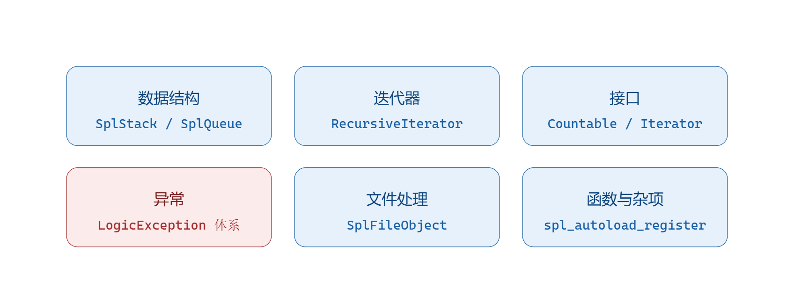
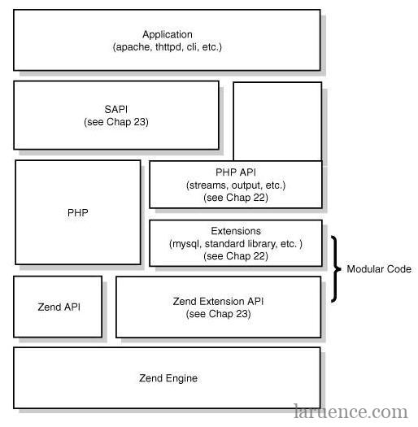
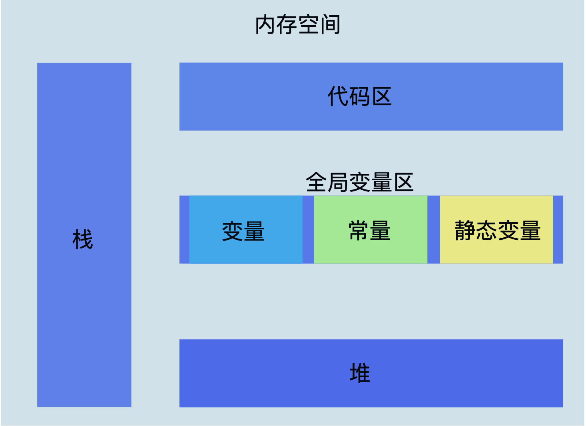
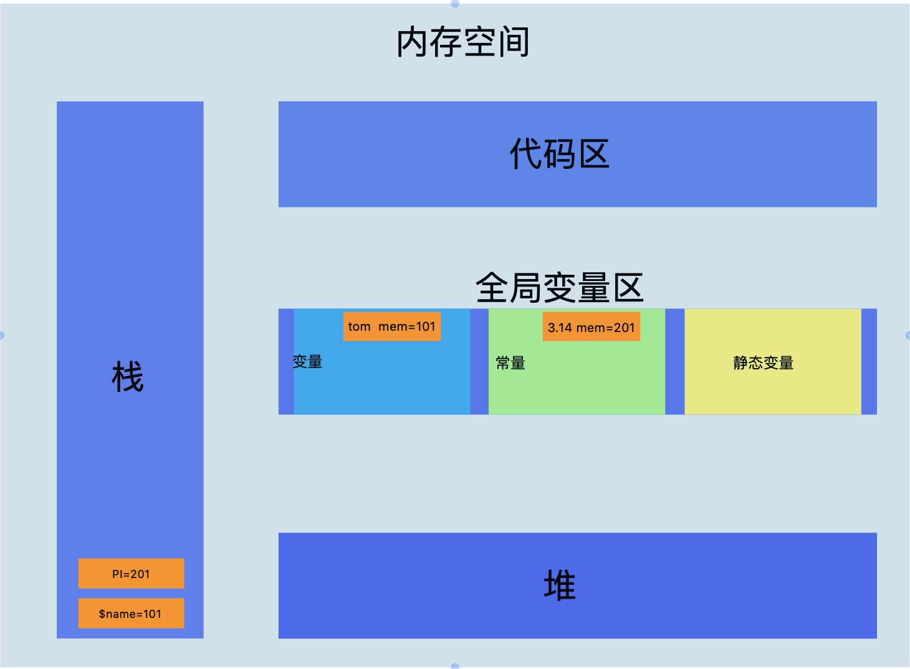
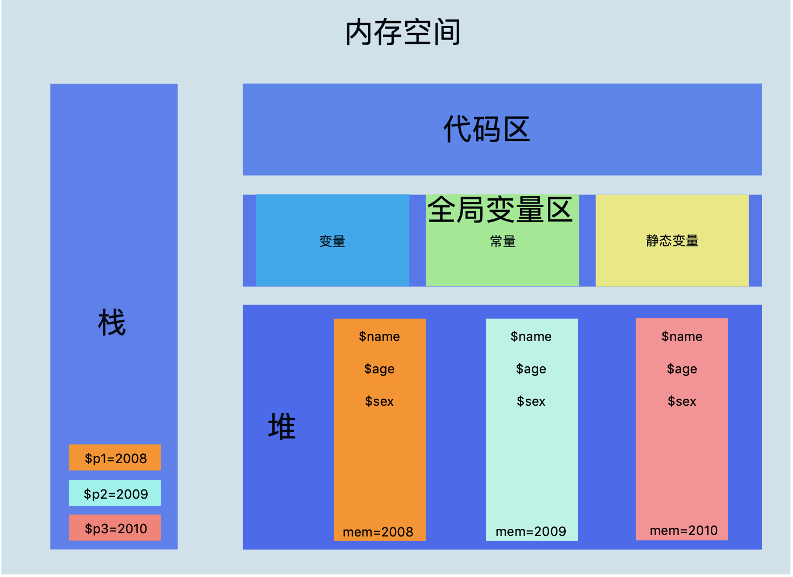

我不去想是否能够成功，既然选择了远方，便只顾风雨兼程。
SPL
一、定义
- SPL，
Standard PHP Library的缩写，译为标准 PHP 类库，是用于解决典型问题（standard problems）的一组接口与类的集合。 - 自 PHP 5.0 起随内核内置发布，无需安装扩展、无需
require，属于核心扩展（php -m | grep -i spl可见SPL）。 - 它要解决的问题主要是五类：数据结构、统一遍历（迭代器）、约定接口、异常体系、文件与自动加载。
- 核心设计思想是「接口 + 可组合实现」：接口定义能力，具体类按需组合，而不是给一堆功能重叠的工具类。
二、分类
官方手册把 SPL 分为六大块，本笔记按此展开：

| # | 分类 | 英文 | 一句话说明 |
|---|---|---|---|
| 1 | 数据结构 | Data Structures | 双链表、栈、队列、堆、优先队列、固定长度数组、对象集合 |
| 2 | 迭代器 | Iterators | 可组合的遍历器：过滤、限制、递归、多路并行 |
| 3 | 接口 | Interfaces | 定义「可数」「可下标访问」「可遍历」「可观察」等能力 |
| 4 | 异常 | Exceptions | 一套可直接使用的标准异常继承树 |
| 5 | 文件处理 | File Handling | SplFileInfo / SplFileObject / SplTempFileObject |
| 6 | 函数与杂项 | Functions & Misc | 自动加载、类关系查询、迭代器工具函数、伪类型类 |
2.1 数据结构
| 类 | 结构 | 特点 | 常用方法 |
|---|---|---|---|
SplDoublyLinkedList |
双向链表 | 基类，支持头尾插入/删除、迭代模式切换 | push/pop、shift/unshift、top/bottom、setIteratorMode |
SplStack |
栈（LIFO） | 继承双向链表，后进先出 | push、pop、top |
SplQueue |
队列（FIFO） | 继承双向链表，先进先出 | enqueue、dequeue |
SplHeap |
堆（抽象类） | 需实现 compare()，可实现最大/最小堆 |
insert、extract、top、isEmpty |
SplMaxHeap / SplMinHeap |
最大堆 / 最小堆 | SplHeap 的开箱实现 |
同上 |
SplPriorityQueue |
优先队列 | 按优先级出队，底层是最大堆 | insert($value, $priority)、setExtractFlags |
SplFixedArray |
固定长度数组 | 只能存数字索引、长度固定，比普通数组省内存 | setSize、toArray、fromArray |
SplObjectStorage |
对象集合 | 以对象为键的 map / 集合，可用关联数据 | attach、detach、contains、addAll、removeAll |
栈与队列
1 | $stack = new SplStack(); |
优先队列（默认最大堆，优先级数字越大越先出）
1 | $pq = new SplPriorityQueue(); |
注意：相同优先级的出队顺序不保证。若要稳定顺序，把优先级做成数组
[$priority, $seq]，compare时依次比较。
自定义堆
1 | class ScoreMaxHeap extends SplMaxHeap |
固定长度数组
1 | $arr = new SplFixedArray(3); |
对象集合
1 | $storage = new SplObjectStorage(); |
2.2 迭代器
SPL 的迭代器可以层层套用（装饰器模式），这是它最好用的部分。按用途分组：
| 分组 | 迭代器 | 用途 |
|---|---|---|
| 基础 | ArrayIterator、IteratorIterator、EmptyIterator、InfiniteIterator、NoRewindIterator |
把数组/可遍历对象包装成 Iterator；包装后仍嫌不够用时的补充 |
| 过滤 | CallbackFilterIterator、FilterIterator、RegexIterator |
按回调 / 抽象方法 / 正则筛选元素 |
| 限制 | LimitIterator |
取区间，天然适合分页 |
| 递归 | RecursiveArrayIterator、RecursiveIteratorIterator、RecursiveTreeIterator、ParentIterator |
拍平多维数组 / 目录树 |
| 目录文件 | DirectoryIterator、FilesystemIterator、GlobIterator、RecursiveDirectoryIterator |
遍历目录 |
| 组合装饰 | AppendIterator、MultipleIterator、CachingIterator |
拼接多个迭代器、并行迭代、缓存/前瞻 |
过滤 + 限流（组合用法）
1 | $it = new ArrayIterator([1, 2, 3, 4, 5, 6]); |
递归遍历目录
1 | $dir = new RecursiveDirectoryIterator(__DIR__, FilesystemIterator::SKIP_DOTS); |
正则筛选文件
1 | $files = new RegexIterator( |
多路并行迭代
1 | $a = new ArrayIterator(['a1', 'a2']); |
2.3 接口
| 接口 | 能力 | 必须实现 |
|---|---|---|
Traversable |
可被 foreach 遍历的标记接口 |
不能直接实现，须经 Iterator 或 IteratorAggregate |
Iterator |
实现完整迭代协议 | current key next rewind valid |
IteratorAggregate |
只需返回一个迭代器，推荐优先用 | getIterator |
ArrayAccess |
数组式下标访问 $obj['k'] |
offsetExists offsetGet offsetSet offsetUnset |
Countable |
可被 count() 计数 |
count |
SeekableIterator |
支持定位到第 N 个 | seek |
RecursiveIterator |
递归迭代 | hasChildren getChildren |
OuterIterator |
可取出被包装的迭代器 | getInnerIterator |
SplObserver / SplSubject |
观察者模式 | update / attach detach notify |
Serializable |
自定义序列化（PHP 8 起不推荐，用 __serialize/__unserialize） |
serialize unserialize |
一个集齐四个接口的集合类
1 | class Collection implements Countable, ArrayAccess, IteratorAggregate |
2.4 异常
SPL 提供了一套开箱即用的标准异常，业务代码直接 throw 即可，不必自己重造。
1 | LogicException // 代码逻辑错误，编译期/静态可发现 |
| 异常 | 使用场景 |
|---|---|
InvalidArgumentException |
入参不合法（最常用） |
LogicException |
不该被调用的方法被调用了 |
BadMethodCallException |
调用了不存在/未实现的方法（__call 兜底时常用） |
LengthException |
长度不符合约束 |
OutOfRangeException |
值越界（注意与 OutOfBoundsException 的区别） |
OutOfBoundsException |
索引/键在运行时不合法（如数组下标越界） |
DomainException |
值不符合领域定义域 |
UnexpectedValueException |
拿到了预期之外的值 |
RuntimeException |
一般运行时错误 |
OverflowException / UnderflowException |
容器满 / 空 |
RangeException |
运行时的区间错误 |
记忆口径：LogicException 系列 = 你写错了代码；RuntimeException 系列 = 环境/数据出问题了。 OutOfRange 偏静态语义越界，OutOfBounds 偏运行时索引越界。
2.5 文件处理
| 类 | 说明 |
|---|---|
SplFileInfo |
只读的文件元信息（路径、大小、时间、权限），轻量 |
SplFileObject |
以对象方式流式读写文件，无需 fopen/fclose，遍历即读行 |
SplTempFileObject |
内存/临时文件对象，适合当作临时缓冲区 |
大文件流式逐行读（常驻内存极低）
1 | $file = new SplFileObject('/path/to/big.csv'); |
元信息查询
1 | $info = new SplFileInfo(__FILE__); |
相比
file()/file_get_contents()，SplFileObject的最大价值是惰性读取：处理 GB 级文件不会把整份内容塞进内存。
2.6 函数与杂项
自动加载（现代 PHP 的基石）
1 | spl_autoload_register(function (string $class): void { |
Composer 的自动加载器本质上就是注册到
spl_autoload_register的一个回调；PSR-4 规范定义了文件名与命名空间的映射规则。
常用函数速查
| 函数 | 用途 |
|---|---|
spl_autoload_register / spl_autoload_unregister |
注册 / 注销自动加载器 |
spl_autoload_functions |
查看已注册的加载器 |
spl_autoload_extensions |
设置默认扩展名 |
class_implements / class_parents / class_uses |
查询类实现的接口 / 父类 / 使用的 trait |
iterator_to_array($it, $preserve_keys) |
迭代器转数组 |
iterator_count |
统计迭代器元素个数 |
iterator_apply |
对每个元素调用回调 |
spl_object_hash |
对象的哈希标识（字符串） |
spl_object_id |
对象的唯一整型 ID（PHP 7.2+，性能更好，优先用） |
spl_classes |
返回当前可用的 SPL 类列表 |
spl_autoload_call |
手动触发自动加载 |
杂项类与伪类型：手册中还有 SplBool、SplInt、SplFloat 等伪类型类，仅用于文档化的类型提示语义，未真正实现，不要使用。
2.7 常见坑
iterator_to_array默认保留键。迭代器键重复时会互相覆盖，需要保留全部元素请传第二参false：1
2$all = iterator_to_array($it); // 可能丢元素
$all = iterator_to_array($it, false); // 按顺序全部收集SplFixedArray不能存字符串键，且未赋值的下标是null而非不存在。SplPriorityQueue相同优先级顺序不稳定，见 2.1 的说明。Traversable不能直接被实现，必须实现Iterator或IteratorAggregate。日常首选IteratorAggregate，代码更短。RecursiveIteratorIterator需要第二参控制顺序：LEAVES_ONLY（默认，只输出叶子）、SELF_FIRST（先父后子）、CHILD_FIRST（先子后父）。SplFileObject::READ_CSV的空行处理：不加SKIP_EMPTY时，末尾空行会返回[null]；另需注意 UTF-8 BOM 会污染第一列。Serializable接口自 PHP 8.1 起被标记为废弃，新代码请用魔术方法__serialize/__unserialize。- PHP 8 的变化：
spl_object_id()取代spl_object_hash()做唯一标识；SplFixedArray、ArrayObject等完善了ArrayAccess/JsonSerializable支持。
三、参考
- 参考 官方文档
- 分类子页：
- 数据结构：https://www.php.net/manual/zh/spl.datastructures.php
- 迭代器：https://www.php.net/manual/zh/spl.iterators.php
- 接口：https://www.php.net/manual/zh/spl.interfaces.php
- 异常：https://www.php.net/manual/zh/spl.exceptions.php
- 文件处理：https://www.php.net/manual/zh/spl.files.php
- SPL 函数：https://www.php.net/manual/zh/ref.spl.php
- 延伸阅读：PSR-4 自动加载规范、Composer 自动加载实现。
yield
一、基础
1.1 yield 是什么
yield 是 PHP 5.5 引入的关键字，用于定义生成器（Generator）。
一句话概括：生成器是一个”可以中途暂停、并且能从外部恢复”的函数。
1 | function gen() |
第一件反直觉的事：调用含 yield 的函数，函数体一行都不会执行，它只是立刻返回一个 Generator 对象。函数体要等到你开始迭代（或手动 current()）时才真正运行。
第二件：Generator 实现了 Iterator 接口，所以它能被 foreach，也能被任何接受 Traversable 的地方消费（iterator_to_array、iterator_count、array_map 不行）。
1 | var_dump($gen instanceof Iterator); // bool(true) |
顺带解释了那个经典”死循环不循环”的例子：
2
3
4
5
$gen = gen();
$g = gen();
var_dump($g instanceof Iterator); // true
echo "hello, world!\n"; // 会正常输出，while(true) 根本没跑
1.2 Generator 是怎么实现 Iterator 的
foreach 遍历任何 Iterator 的固定时序是：rewind → valid → current / key → 循环体 → next → valid → ...。
yield 把这些方法自动映射成了语义：
| Iterator 方法 | 生成器里的语义 |
|---|---|
rewind() |
从头执行到第一个 yield（foreach 开始时隐式调用，所以通常不用手动写） |
valid() |
当前是否停在某个 yield 上（函数执行完/return 后返回 false） |
current() |
当前 yield 后面表达式的值 |
key() |
yield 出现的次序，从 0 递增；写了 yield $k => $v 则取 $k |
next() |
从当前 yield 执行到下一个 yield（或 return、或函数结束） |
1 | function gen1() |
等价的手动拆解（能帮你彻底看清时序）：
1 | $gen = gen1(); |
所以不要用”暂停/等待唤醒”去理解 yield（虽然行为上像），而应理解为：PHP 把函数体编译成了 Iterator 的五个方法。
1.3 yield 是表达式，不是语句 —— 双向通信
yield 有一个值：调用方通过 Generator::send() 传进来的值。这让生成器从”单向产出”升级为”双向通道”，也就是协程的基础。
1 | function gen3() |
send($value) 的两件事：
- 把
$value作为当前yield表达式的值，恢复执行到下一个yield； - 返回下一个
yield产出的值（等同于 resume 后的current()）。
经典用法：把外部数据送回函数内部继续计算
1 | function gen4() |
yield 作为语句（不收值）时就是一个分号位置的分隔符，这也是协程里”让出控制权”的写法：
1 | function logger($fileName) |
1.4 return 与 getReturn
- PHP 5.5/5.6：生成器里
return;只能结束，不能带值。 - PHP 7.0+：可以
return $value，用Generator::getReturn()取（必须在生成器跑完之后取，否则抛Exception）。
1 | function gen5(): Generator |
1.5 yield from（PHP 7.0+）
yield from 用来委托另一个生成器 / 数组 / Traversable，把元素直接摊平到外层。
1 | function inner() |
yield from 的三个要点：
- 会透传
send()和throw()到子生成器； - 子生成器的键也会被保留（多个子生成器同键时，靠
iterator_to_array($g, false)才能全取）； - 表达式结果是子生成器的
return值。
它也是递归生成器的正确写法：
1 | function walk(array $nodes): Generator |
1.6 内存与性能
内存：生成器是惰性的，处理 N 条数据时内存是常数级，不随 N 增长。
1 | // 100 万条：普通 range() 要先造出整个数组，几十 MB |
性能：生成器不是免费的。每个生成器对象都有固定开销，数据量小的时候”包一层生成器”反而比直接返回数组慢。结论：
- 数据量大 / 流式 / 需要惰性 → 用生成器，收益巨大；
- 几十几百条的小数组 → 直接返回数组，别为了”看起来高级”包生成器。
1.7 特性清单与常见坑
特性
yield只能写在函数体内（含匿名函数），不能出现在全局作用域。- 函数体内出现
yield，该函数永远返回Generator，不论有没有return。 Generator实现了Iterator；但它和普通对象一样能被foreach是因为这个接口，而不是”对象魔法”。- 生成器不能被 clone（
Generator是 uncloneable）。 - 生成器只能被完整消费一次。
坑
- 不能重复遍历。已推进过的生成器再
rewind()→Exception: Cannot rewind a generator that was already run；已结束时再foreach→Cannot traverse an already closed generator。需要多次遍历就重新调用生成器函数。 - 第一个
yield与send()的关系：生成器尚未启动时调用send()，PHP 会先隐式推进到第一个yield，这次传入的值会被丢弃。要拿到第一个值，用current()/rewind()。（协程调度器里必须专门处理这一点，见 2.5 的beforeFirstYield标志。） current()/foreach会自动 rewind，所以别在foreach前手动rewind()生成器；但注意foreach结束后不要指望迭代器还停在可用状态。iterator_to_array($gen)默认保留键，生成器里yield $k => $v出现重复$k时会互相覆盖。要按顺序全部收集，传第二参false：1
$all = iterator_to_array($gen, false);
- 不能用
count()计数，但可以iterator_count($gen)（注意：它会跑完生成器）。 - 不能随机访问、不能
array_map传生成器，需要先iterator_to_array。 yield表达式两侧的括号：PHP 5.x 必须写$x = (yield $v);，PHP 7+ 可以省略。写 PHP 7 代码时建议不省略，可读性更好也避免优先级意外。- 想通过 yield 传出引用，函数声明要带
&（function &gen()），极少用，遇到再查。 Generator也是Traversable的一种，所以类型提示写iterable能同时接受数组和生成器 —— 写库函数时优先用iterable。
二、实战
2.1 惰性序列：无限序列 / 斐波那契
1 | function fib(): Generator |
2.2 数据流水线：map / filter / take 组合
生成器天然适合做”管道”，每一节都是惰性的，中间不会产生临时大数组。
1 | function map(iterable $items, callable $fn): Generator |
2.3 大数据集流式处理：百万行导出 / 日志分析
这是生成器最”值钱”的场景 —— 把内存占用从 O(N) 压到 O(1)。
流式读 CSV / 日志
1 | function readLines(string $path): Generator |
（也可以直接用 SplFileObject，它本身就是 Iterator，见 SPL 笔记 2.5。）
流式导出百万行 CSV，内存恒定
1 | function exportRows(PDO $pdo, int $pageSize = 1000): Generator |
关键点：
yield让”查库”和”写文件”交替进行，而不是先把全部数据fetchAll出来。
2.4 数据库惰性游标（Laravel 场景）
Laravel 的 cursor() / lazy() 就是基于生成器的惰性查询；自己写库时同理：
1 | // 一次性取回，内存随行数增长 |
注意：cursor() 期间不能在同一连接上再执行其它查询（会与未消费的结果集冲突），需要另开连接。
2.5 协程：用 yield 实现协作式多任务调度
这是 yield 的”高阶用法”，也是鸟哥那篇《在 PHP 中使用协程实现多任务调度》的核心。
思路：把 yield 当成任务的”交出控制权”指令。每个生成器是一个任务，调度器负责轮流推进它们。
第一步：Task —— 包装一个生成器
1 | class Task |
第二步：Scheduler —— 用队列轮转
1 | class Scheduler |
第三步：跑起来 —— 两个任务交替打印
1 | function task1() |
输出是严格交替的：
1 | This is task 1 iteration 1. |
第四步：SystemCall —— 让协程能”调用系统”
任务光会”让出”还不够，要能读到下一轮被唤醒时调度器回传的数据。做法是：任务 yield 一个可调用对象，调度器识别到它不是普通值，就执行它，由它决定 setSendValue() 什么、以及是否立刻重新入队。
1 | class SystemCall |
对应的 run() 里要加分流：
1 | $retval = $task->run(); |
任务里就能像写同步代码一样”取任务号”：
1 | function task3() |
第五步：非阻塞 IO —— 协程真正的用武之地
把”等待 socket 可读”也做成一次 SystemCall：任务 yield waitForRead($socket)，调度器把它登记到等待表里，然后在主循环用 stream_select() 统一阻塞等待，谁就绪就把谁重新入队。这样：
- 代码写法是同步的（
yield waitForRead($socket); $data = fread(...)）； - 底层是异步的（一个进程处理多个连接，不阻塞）。
1 | protected function ioPoll(?int $timeout): void |
配合一个”轮询任务”，在队列空闲时用 null 超时阻塞、队列非空时用 0 超时尽快返回。
这里就是 PHP 8 的 Fiber 想解决的问题：上面的调度器需要把「让出点」写进业务代码（每个 yield 都是一个手动让出点），调度器一复杂就难以维护 —— 鸟哥的原话是”在令人敬畏的代码和一大堆乱代码之间只有一线之隔“。
2.6 补充：yield 做错误处理与异常注入
生成器内部可以 try/catch，外部可以通过 Generator::throw() 在暂停点抛异常进去：
1 | function gen() |
这是”协程内错误可被捕获”的基础，调度器配合它才能把异常优雅地抛回任务内部。
2.7 什么时候别用
- 小数据量、需要多次遍历、需要随机访问 → 用数组。
- 需要并行/并发真正提速 → 生成器是协作式单线程，不会让 CPU 密集任务变快，只在 IO 等待场景有意义（或上
Fiber/ Swoole）。 - 逻辑简单的一次性转换 → 直接
array_map/array_filter，少一层心智负担。
三、参考
- 参考一 —— PHP yield 分析，以及协程的实现（超详细版），重点：Iterator 遍历时序、yield 八大特性、send 双向通信
- 参考二 —— 在 PHP 中使用协程实现多任务调度（鸟哥），重点：Task / Scheduler / SystemCall / CoroutineReturnValue / 非阻塞 IO
- PHP 官方手册 - 生成器
- PHP 官方手册 - Generator 类
- PHP 官方手册 - 协程（Fiber） —— PHP 8.1+ 的原生协程，是上面手写调度器的”官方答案”
预定义接口
后期静态绑定
一、基础
先看官网介绍：PHP增加了一个叫做后期静态绑定的功能，用于在继承范围内引用静态调用的类。准确说，后期静态绑定工作原理是存储了在上一个“非转发调用”(non-forwarding call)的类名。当进行静态方法调用时，该类名即为明确指定的那个(通常在::运算符左侧部分)；当进行非静态方法调用时，即为该对象所属的类。所谓的“转发调用”(forwarding call)指的是通过以下几种方式进行的静态调用：self::，parent::，static:: 以及 forward_static_call()。可用 get_called_class()函数来得到被调用的方法所在的类名，static::则指出了其范围。
对于不了解这块的同学来说，看完是不是一脸懵，完全不知道讲了什么东西，大概总结一下(个人理解)：①对于使用static::调用的方法或属性，不一定会调用定义此方法或属性的类，而是会根据外部调用类进行转发调用。②使用self::或者CLASS对当前类的静态引用，取决于定义当前方法所在的类③和self::类似，parent::也取决于定义当前方法所在的类。对于②③来说，完全按self/parent字面意思理解即可。
二、例子
1 | class AAA { |
三、参考
底层原理
一、核心结构

- Zend：用纯C实现，是PHP的内核部分，它将PHP代码翻译(词法、语法解析等一系列编译过程)为可执行opcode处理。它实现了基本的数据结构、内存分配及管理，提供了相应的api方法供外部调用，是一切的核心，所有的外围功能均围绕Zend实现。
- Zend引擎：跨平台的重要基础
- Zend引擎执行PHP代码过程：
- 词法分析Scanning(Lexing)，将PHP代码转换为语言片段Tokens
- 语义解析Parsing，将Tokens转换成简单而有意义的表达式
- 编译Compilation，将表达式编译成Opcode
- 执行Execution，顺序执行Opcode，每次一条，以实现PHP代码所表达的功能
- Opcode是PHP程序执行的最基本单位
- 一个Opcode由两个参数(op1,op2)、返回值和处理函数组成，PHP程序最终被翻译为一组opcode处理函数的顺序执行。
- APC、Opchche等扩展可以将Opcode缓存以加速PHP应用的运行速度，即省去了前三部词法分析、语义解析、编译
- Zend引擎执行PHP代码过程：
- Zend API
- Zend Extension API
- Zend引擎：跨平台的重要基础
- Extensions：通过组件式的方式提供各种基础服务，常见的各种内置函数(如array/string)、标准库等都是通过Extensions来实现，用户也可以根据需要实现自己的extension以达到功能扩展、性能优化等目的。
- SAPI：全称是Server Application Programming Interface，即服务端应用编程接口。它通过一系列钩子函数使得PHP可以和外围交互数据，将PHP本身和上层应用解耦隔离，PHP可以不再考虑如何针对不同应用进行兼容，而应用本身也可以针对自己的特点实现不同的处理方式，这是PHP非常优雅和成功的一个设计。
- Application：即编写的PHP程序，通过不同的SAPI方式得到各种各样的应用模式，如通过webserver实现web应用、在命令行下以脚本方式运行等等。
二、生命周期
- 基本过程
- 模块初始化(Module Initialization)，即调用php.ini中指明的扩展的初始化函数进行初始化工作，如mysql扩展。
- 请求初始化(Request Initialization)，即初始化为执行本次脚本所需要的变量名称和变量值内容的符号表，如$_SESSION变量。
- 执行PHP脚本。
- 请求处理完成(Request Shutdown)，按顺序调用各个模块的RSHUTDOWN方法，释放掉这次请求使用过的所有东西，如变量表的所有变量、申请的内存等。
- 关闭模块(Module Shutdown)，PHP调用每个扩展的MSHUTDOWN方法，这是各个模块最后一次释放内存的机会。
- 不同的运行模式下以上过程发生的次数可能不同，传送门
- 直接以CLI/CGI模式调用
- 多进程模式
- 多线程模式
- Embedded(嵌入式，在自己的C程序中调用Zend Engine)
三、一些概念
CGI，全称是通用网关接口(Common Gateway Interface)，是一种协议，描述了客户端和这个程序之间传输数据的一种标准，可以让一个客户端从网页浏览器向执行在Web服务器上的程序请求数据。它是独立于任何语言的，任何一种编程语言都可以实现它，只要这种语言具有标准输入、输出和环境变量，如php，perl，tcl等。它的作用就是帮助服务器与web编程语言通信，是为了保证web server传递过来的数据是标准格式的，方便CGI程序(如php-cgi)的编写者。
- 如果一个静态请求如xxx/index.html或/image.png等，那么web server会去文件系统中找到这个文件并发送给浏览器
- 如果一个动态请求如xxx/index.php或/index.jsp等，nginx会根据配置文件将这个请求简单处理后交给相应的解析器(如PHP)
- 假如请求的是index.php，nginx会传哪些数据给PHP解析器呢？url要有吧，查询字符串也得有吧，POST数据也要有，HTTP Header不能少吧等等。CGI就是规定要传哪些数据、以什么样的格式传递给后方处理这个请求的协议。
- 当web server收到/index.php这个请求后，会启动对应的CGI程序，这里就是PHP的解析器。接下来PHP解析器会解析php.ini文件，初始化执行环境，然后处理请求，再以CGI规定的格式返回处理后的结果，退出进程。web server再把结果返回给浏览器。
FastCGI也是Web服务器和处理程序之间通信的一种协议，是CGI的一种改进方案。FastCGI像是一个常驻(long-lived)型的CGI，可以一直执行，在请求到达时不会花费时间去fork一个进程来处理(CGI慢的原因)。另外它还是分布式的，通过Socket与FastCGI进程管理器进行交互，FastCGI程序可以在Web服务器以外的主机上执行，并且可以接受来自其它Web服务器的请求。
php-cgi：php的解释器，php-cgi是php提供给web serve的cgi协议接口程序。
- 当每次接到http前端服务器的请求都会开启个php-cgi进程进行处理，开启的php-cgi的过程中会先要重载配置，数据结构以及初始化运行环境。如果更新了php配置，那么就需重启php-cgi才能生效。
- php-cgi只是个CGI程序，本身只能处理请求返回结果，不会管理进程，所以就出现了一些能够调度php-cgi进程的程序，比如由lighthttpd分离出来的spawn-fcgi，再比如php-fpm。
PHP-FPM全称
PHP FastCGI Process Manager，即PHP FastCGI进程管理器，是FastCGI协议的一种实现并被PHP官方收录，用于管理PHP进程并接受来自Web服务器(如nginx)的请求。它包含master和worker两种进程，master进程只有一个，负责监听端口，接收来自服务器的请求；而worker进程则一般有多个(具体数量根据实际需要配置)，每个进程内部都嵌入了一个PHP解释器，是PHP代码真正执行的地方。由于php-fpm是多进程的，而一个php-cgi基本消耗7-25M内存，因此如果连接过多就会导内存消耗过大，引发一些问题，例如nginx里的502错误。
为什么会出现php-fpm?
- php-fpm的出现是为了很好的管理php-fastcgi而实现的一个程序
什么是php-fastcgi?
- php-fastcgi只是一个cgi程序，只会解析php请求并且返回结果，不会管理，因此才出现的php-fpm。
为什么不叫php-cgi?
- 其实在php-fastcgi出现之前是有一个php-cgi存在的，只是它的执行效率低下，因此被php-fastcgi取代。
php-fastcgi和php-cgi有什么区别?
- 当一个服务web-server(nginx)分发过来请求的时候，通过匹配后缀知道该请求是个动态的php请求，会把这个请求转给php。
- php-cgi：一个请求过来后，每次都要不停的去创建一个进程，读取php.ini配置，初始化环境，返回数据，退出进程等周而复始，而进程的启动与销毁是非常占用资源的。
- php-fastcgi：首先fast-cgi会先启一个master进程，读取php.ini配置文件，初始化执行环境，然后再启动多个worker进程。当请求过来时，master会传递给一个worker，然后立即可以接受下一个请求。当worker不够用时，master可以根据配置预先启动几个worker等着。当空闲worker太多时，也会停掉一些。
- 当一个服务web-server(nginx)分发过来请求的时候，通过匹配后缀知道该请求是个动态的php请求，会把这个请求转给php。
nginx是怎么和php-fpm通信的？
- nginx提供了fastcgi模块将http请求映射为对应的fastcgi请求。
- nginx的fastcgi模块提供了fastcgi_param指令来主要处理这些映射关系，其主要完成的工作是将nginx中的变量翻译成PHP中能够理解的变量。
- fastcgi_pass指令用于指定php-fpm进程监听的地址，nginx会把所有的php请求翻译成fastcgi请求之后再发送到这个地址。
php是怎么平滑启动的？
- php-cgi进程是没办法平滑重启的，php-fpm对此的处理机制是新的worker进程用新的配置，已经存在的worker进程处理完请求后退出。
php-fpm.conf
1
2
3
4
5
6
7
8
9
10
11
12
13
14
15
16
17
18
19
20
21
22
23
24
25
26
27
28
29
30
31
32
33
34
35
36
37
38
39
40
41
42
43
44
45
46
47
48
49
50
51
52
53
54
55
56
57
58
59
60
61
62
63
64
65
66
67
68
69
70
71
72
73
74
75
76
77
78
79pid = run/php-fpm.pid
#pid设置，默认在安装目录中的var/run/php-fpm.pid，建议开启
error_log = log/php-fpm.log
#错误日志，默认在安装目录中的var/log/php-fpm.log
log_level = notice
#错误级别. 可用级别为: alert（必须立即处理）, error（错误情况）, warning（警告情况）, notice（一般重要信息）, debug（调试信息）. 默认: notice.
emergency_restart_threshold = 60
emergency_restart_interval = 60s
#表示在emergency_restart_interval所设值内出现SIGSEGV或者SIGBUS错误的php-cgi进程数如果超过 emergency_restart_threshold个，php-fpm就会优雅重启。这两个选项一般保持默认值。
process_control_timeout = 0
#设置子进程接受主进程复用信号的超时时间. 可用单位: s(秒), m(分), h(小时), 或者 d(天) 默认单位: s(秒). 默认值: 0.
daemonize = yes
#后台执行fpm,默认值为yes，如果为了调试可以改为no。在FPM中，可以使用不同的设置来运行多个进程池。 这些设置可以针对每个进程池单独设置。
listen = 127.0.0.1:9000
#fpm监听端口，即nginx中php处理的地址，一般默认值即可。可用格式为: ‘ip:port’, ‘port’, ‘/path/to/unix/socket’. 每个进程池都需要设置.
listen.backlog = -1
#backlog数，-1表示无限制，由操作系统决定，此行注释掉就行。backlog含义参考：
listen.allowed_clients = 127.0.0.1
#允许访问FastCGI进程的IP，设置any为不限制IP，如果要设置其他主机的nginx也能访问这台FPM进程，listen处要设置成本地可被访问的IP。默认值是any。每个地址是用逗号分隔. 如果没有设置或者为空，则允许任何服务器请求连接
listen.owner = www
listen.group = www
listen.mode = 0666
#unix socket设置选项，如果使用tcp方式访问，这里注释即可。
user = www
group = www
#启动进程的帐户和组
pm = dynamic #对于专用服务器，pm可以设置为static、dynamic(默认)、ondemand
#如何控制子进程，选项有static和dynamic。如果选择static，则由pm.max_children指定固定的子进程数。如果选择dynamic，则由下开参数决定：
pm.max_children #，子进程最大数
pm.start_servers #，启动时的进程数
pm.min_spare_servers #，保证空闲进程数最小值，如果空闲进程小于此值，则创建新的子进程
pm.max_spare_servers #，保证空闲进程数最大值，如果空闲进程大于此值，此进行清理
pm.max_requests = 1000
#设置每个子进程重生之前服务的请求数. 对于可能存在内存泄漏的第三方模块来说是非常有用的. 如果设置为 ’0′ 则一直接受请求. 等同于 PHP_FCGI_MAX_REQUESTS 环境变量. 默认值: 0.
pm.status_path = /status
#FPM状态页面的网址. 如果没有设置, 则无法访问状态页面. 默认值: none. munin监控会使用到
ping.path = /ping
#FPM监控页面的ping网址. 如果没有设置, 则无法访问ping页面. 该页面用于外部检测FPM是否存活并且可以响应请求. 请注意必须以斜线开头 (/)。
ping.response = pong
#用于定义ping请求的返回相应. 返回为 HTTP 200 的 text/plain 格式文本. 默认值: pong.
request_terminate_timeout = 0
#设置单个请求的超时中止时间. 该选项可能会对php.ini设置中的’max_execution_time’因为某些特殊原因没有中止运行的脚本有用. 设置为 ’0′ 表示 ‘Off’.当经常出现502错误时可以尝试更改此选项。
request_slowlog_timeout = 10s
#当一个请求该设置的超时时间后，就会将对应的PHP调用堆栈信息完整写入到慢日志中. 设置为 ’0′ 表示 ‘Off’
slowlog = log/$pool.log.slow
#慢请求的记录日志,配合request_slowlog_timeout使用
rlimit_files = 1024
#设置文件打开描述符的rlimit限制. 默认值: 系统定义值默认可打开句柄是1024，可使用 ulimit -n查看，ulimit -n 2048修改。
rlimit_core = 0
#设置核心rlimit最大限制值. 可用值: ‘unlimited’ 、0或者正整数. 默认值: 系统定义值.
chroot =
#启动时的Chroot目录. 所定义的目录需要是绝对路径. 如果没有设置, 则chroot不被使用.
chdir =
#设置启动目录，启动时会自动Chdir到该目录. 所定义的目录需要是绝对路径. 默认值: 当前目录，或者/目录（chroot时）
catch_workers_output = yes
#重定向运行过程中的stdout和stderr到主要的错误日志文件中. 如果没有设置, stdout 和 stderr 将会根据FastCGI的规则被重定向到 /dev/null . 默认值: 空.
后记
- cgi：一种协议，通过cgi协议web server可以将动态请求和相关参数发送给专门处理动态内容的应用程序。
- fastcgi：也是一种协议，是cgi的优化版。
- php-cgi：cgi协议的一种实现，它是单进程的，一个进程处理一个请求，处理结束后进程就销毁。
- php-fpm：是对php-cgi的改进版，也是fastcgi的一种实现，它直接管理多个php-cgi进程/线程。
- cgi进程/线程：在php上就是php-cgi进程/线程，专门用于接收web server的动态请求，调用并初始化zend虚拟机。
- cgi脚本：被执行的php源代码文件。
- zend虚拟机：对php文件做词法分析、语法分析、编译成opcode并执行，最后关闭zend虚拟机。
- cgi进程/线程和zend虚拟机的关系：cgi进程调用并初始化zend虚拟机的各种环境。
四、PHP-FPM详解
处理流程
- PHP-FPM的master进程接收到请求。
- master进程根据配置指派特定的worker进程进行请求处理，如果没有可用进程则返回502错误。
- worker进程处理请求，如果超时则返回504错误。
- 请求处理结束，返回结果。
- 具体流程如下：
- fpm的实现就是创建一个master进程，在master进程中创建worker pool并监听socket，然后fork出多个子进程(worker)。worker进程启动后阻塞在fcgi_accept_request()上接收请求，有请求到达后worker开始读取请求数据，读取完成后开始处理然后再返回，在这期间是不会接收其它请求的。这也就是说fpm的子进程同时只能响应一个请求，只有把这个请求处理完成后才会接收下一个请求。
- fpm的master进程与worker进程之间不会直接进行通信，master通过共享内存获取worker进程的信息，比如worker进程当前状态、已处理请求数等，当master进程要杀掉一个worker进程时则通过发送信号的方式通知worker进程
- worker的工作流程包含以下几个步骤
- 等待请求：fcgi_accept_request()阻塞等待请求
- 接收请求：fastcgi请求到达后被worker接收并解析，一直到完全接收，然后将method、query、uri等信息保存到worker进程的fpm_scoreboard_proc_s结构中
- 初始化请求：php_request_startup()执行，此步骤会调用每个扩展的PHP_RINIT_FUNCTION方法，初始化一些操作
- 处理请求(编译、执行)：php代码编译执行阶段，由 php_execute_script方法完成
- 关闭请求：返回响应，执行php_request_shutdown方法关闭请求，然后进入第一步继续等待请求，此步骤会执行每个扩展的PHP_RSHUTDOWN_FUNCTION进行一些收尾工作
运行方式
pm = static，静态，始终保持一个固定数量的子进程，这个数由pm.max_children定义，这种方式很不灵活，也通常不是默认的。pm = dynamic，动态，子进程的数量是动态变化的，启动时会生成固定数量的子进程，可以理解成最小子进程数，通过pm.start_servers控制，而最大子进程数则由pm.max_children控制，子进程数会在pm.start_servers~pm.max_children范围内波动。另外闲置的子进程数还可以由pm.min_spare_servers和pm.max_spare_servers两个配置参数控制，如果闲置的子进程超过pm.max_spare_servers则会被杀掉。pm = ondemand，按需要，这种模式和dynamic模式相反，把内存放在第一位。每个闲置进程在持续闲置了pm.process_idle_timeout秒后就会被杀掉。有了这个模式，到了服务器低峰期，内存自然会降下来，如果服务器长时间没有请求，就只有一个主进程，当然其弊端是，遇到高峰期或者pm.process_idle_timeout设置太小，无法避免服务器频繁创建进程的问题。
五、参考
垃圾回收机制
一、基础
垃圾回收机制是一种动态存储分配方案，它会自动释放程序不再需要的已分配的内存块，自动回收内存的过程叫垃圾收集，它是新一代语言所共有的特征。
- <=5.2：引用计数法
每个php变量存在一个叫”zval”的变量容器中。一个zval变量容器，除了包含变量的类型和值，还包括两个字节的额外信息。第一个是”is_ref”，是个bool值，用来标识这个变量是否是属于引用集合(reference set)。通过这个字节，php引擎才能把普通变量和引用变量区分开来，由于php允许用户通过使用&来使用自定义引用，zval变量容器中还有一个内部引用计数机制，来优化内存使用。第二个额外字节是”refcount”，用以表示指向这个zval变量容器的变量(也称符号即symbol)个数。所有的符号存在一个符号表中，其中每个符号都有作用域(scope)，那些主脚本(比如：通过浏览器请求的的脚本)和每个函数或者方法也都有作用域。
将一个变量赋值给另一个变量时，不会立即为新变量分配内存空间，而是在原变量的zval中给refcount加1。 只有当原变量或者发生改变时，才会为新变量分配内存空间，同时原变量的refcount减1 。当然，如果unset原变量，新变量直接就使用原变量的zval而不是重新分配。&引用赋值时，原变量的is_ref 变为1，refcount 加1. 如果给一个变量&赋值，之前=赋值的变量会分配空间。
$a=1给变量a赋值的时候：is_ref为false，refcount为1; $b=$a将变量a的值赋给变量b，变量b不会立刻去在内存中存储值，而是先指向变量a的值，一直到变量a有任何操作的时候，此时is_ref=0,refcount=2; $c=&$a程序操作了变量a，变量b会自己申请一块内存将值放进去，所以变量a的zval容器中refcount会先减1变为1，然后变量c又指向a，所以refcount会再加1变为2，is_ref变为true。
- php5.3+：同步回收算法
在5.2版本或之前版本，引用计数回收算法:为每个内存对象分配一个计数器refcount，当一个内存对象建立时计数器初始化为1(因此此时总是有一个变量引用此对象)，以后每有一个新变量引用此内存对象，则计数器加1，而每当减少一个引用此内存对象的变量则计数器减1，当垃圾回收机制运作的时候，将所有计数器为0的内存对象销毁并回收其占用的内存。而PHP中内存对象就是zval，而计数器就是refcount__gc。
在5.3之后版本(不包含php7)，回收算法仍然以引用计数为基础，改进为同步回收算法。如果发现一个zval容器中的refcount在增加，说明不是垃圾；如果发现一个zval容器中的refcount在减少，如果减到了0，直接当做垃圾回收；如果发现一个zval容器中的refcount在减少，并没有减到0，PHP会把该值放到缓冲区，当做有可能是垃圾的怀疑对象。当缓冲区达到临界值，PHP会自动调用一个方法取遍历每一个值，如果发现是垃圾就清理。
- php7.0+：垃圾回收器+标记清除算法
php包含四种标量类型(布尔型，整型，浮点型，字符串)，三种复合类型(数组，对象，callable)，两种特殊类型(资源和null)。在php7中，字符串、数组、对象、资源的数据结构中头部都有一个gc，这个gc的作用就是用来对垃圾回收的支持。
当变量赋值、传递时会增加value的引用数，unset/return等释放变量时再减掉引用数，减掉后如果发现refcount变为0则直接释放value，这是变量的基本回收过程。
如果当变量的refcount减小后大于0，PHP并不会立即对这个变量进行垃圾鉴定和回收，而是放入一个缓冲区中(双向链表)，等这个缓冲区满了以后(10000个值)再统一进行处理，这个缓冲区就称为垃圾回收器。
加入缓冲区的是变量zend_value里的gc，目前垃圾只会出现在数组和对象两种类型中，数组的情况上面已经介绍了，对象的情况则是成员属性引用对象本身导致的，其它类型不会出现这种变量中的成员引用变量自身的情况，所以垃圾回收只会处理这两种类型的变量。
一个变量只能加入一次缓冲区，为了防止重复加入，变量加入后会把zend_refcounted_h.gc_info置为 GC_PURPLE，即标为紫色，后续不会重复插入。
垃圾缓冲区是一个双向链表，等到缓存区满了以后则启动垃圾检查过程：遍历缓冲区，对当前变量的所有成员进行遍历，然后把成员的refcount减1(如果成员还包含子成员则也进行递归遍历，即深度优先遍历)，最后再检查当前变量的引用，如果减为了0则为垃圾。
这个算法的原理核心是：垃圾是由于成员引用自身导致的，那么就对所有的成员减一遍引用，如果发现最后变量本身的refcount变为了0则就表明其引用全部来自自身成员，即其他任何地方都不再使用它，那么它就是垃圾，需要被回收掉，反之说明不是垃圾，需要将其从缓冲区移出去。具体的过程如下：
①从缓冲区链表的roots开始遍历，把当前value标为灰色(zend_refcounted_h.gc_info置为GC_GREY)，然后对当前value的成员进行深度优先遍历，把成员value的refcount减1，并且也标为灰色；
②重复遍历缓冲区链表，检查当前value引用是否为0，为0则表示确实是垃圾，把它标为白色(GC_WHITE)，如果不为0则排除了引用全部来自自身成员的可能，表示还有外部的引用，并不是垃圾。这时候因为步骤(1)对成员进行了refcount减1操作，需要再还原回去，对所有成员进行深度遍历，把成员refcount加1，同时标为黑色；
③再次遍历缓冲区链表，将非GC_WHITE的节点从roots链表中移出，最终roots链表中全部为真正的垃圾，最后将这些垃圾清除。
1 | #############5.6############# |
二、参考
变量和内存的关系
一、内存结构
- 内存从逻辑上说大体上是分为4个区，分别为
- 栈空间：速度快，占的空间小
- 堆空间：速度慢，占的空间大
- 代码区
- 静态区，也称全局变量区，由3部分组成：
- 变量：可重复写
- 常量：只能写一次
- 静态变量：整个程序运行期间都存在

在C语言中，供用户使用的存储空间分为三类：程序区、静态存储区、动态存储区。其中，程序区存放的是可执行程序的机器指令；静态存放区存储的是在程序运行过程中需要占用固定存储单元的变量，如全局变量；动态存储区存放的是在程序运行过程中根据需要动态分配内存空间的变量，如形式参数、局部变量。
二、测试代码
1 | <?php |
定义变量/常量过程
- 将
Tom放到全局变量区的变量区，同时申请一块内存拿到内存地址，如101 - 在栈空间申请一块内存以保存变量名
$name - 将
Tom的地址101保存到$name对应的值 echo $name则是根据$name去栈空间拿到地址值101，根据地址取数据Tom

- 将
对象，作为php数据类型之一，在运行的时候都要加载到内存中去用。对象是放在堆里面的，但对象名称是放在栈里面的，这样通过对象名称就可以使用对象了。
1 | class Person |

$p = new Person();
$p是对象名称在栈内存里面，存储对象的首地址，相当于一个指针指向堆里面的对象new Person()是真正的对象是在堆内存里面
三、参考
数组实现原理
一、基础
- 先来看php两个版本的源码
- php5.6
1 | typedef union _zvalue_value { |
- php7.x
1 | typedef union _zend_value { |
哈希表
- 定义：哈希表，也叫散列表，是根据关键码值(Key value)而直接进行访问的数据结构。
- 它通过把关键码值映射到表中一个位置来访问记录，以加快查找的速度，这个映射函数叫做散列函数，存放记录的数组叫做散列表。
- 哈希函数：哈希表是把不同的关键字映射到不同单元的一种数据结构，实现这一过程的方法叫做哈希函数。
- 哈希冲突：如果关键字值数量很多，很容易出现多个关键字映射到同一单元的情况，这就是哈希冲突。
- 解决冲突
- 链接法：当不同的关键字映射到同一单元时，在同一单元内使用链表来保存这些关键字。
- 开放寻址法：当插入数据时，如果发现关键字被映射到的单元存在数据了，说明发生了冲突，就继续寻找下一个单元，直到找到可用单元为止。
- 定义：哈希表，也叫散列表，是根据关键码值(Key value)而直接进行访问的数据结构。
链表
- 定义：链表是一种物理存储单元上非连续、非顺序的存储结构，数据元素的逻辑顺序是通过链表中的指针链接次序实现的。
二、实现
- php解决哈希冲突的方式是使用了链接法，所以php数组是由哈希表+链表实现，准确来说是由哈希表+双向链表实现
- 未完待续
三、参考
调优
一、循环查询数据库
- 减少查询次数：如果可能的话，可以使用JOIN操作将多个表连接在一起，这样可以在一次查询中获取所有需要的数据。
- 使用索引：在查询语句中使用索引可以大大提高查询速度，可以使用EXPLAIN命令来查看查询语句是否使用了索引。
- 使用缓存：可以使用缓存来避免重复查询数据库，可以使用Memcached或Redis等缓存工具来存储查询结果，这样可以减少数据库的访问次数。
- 批量查询：如果需要查询多个ID对应的数据，可以使用IN语句一次查询多条记录，这样可以减少查询次数。
- 分页查询：如果需要查询大量数据并进行分页展示，可以使用LIMIT语句来限制查询结果的数量，这样可以减少查询数据量，提高查询速度。
- 数据库连接池：在循环查询数据库时，频繁地创建和关闭数据库连接会导致性能问题，可以使用连接池来复用数据库连接，减少连接的创建和关闭次数。
二、接口优化
- 接口性能优化：通过优化接口的代码逻辑、数据库查询、缓存、网络传输等方面，提升接口的响应速度和并发处理能力，从而提高系统的整体性能。
- 接口安全优化：通过对接口进行身份验证、访问控制、数据加密等安全措施，保障接口的安全性，防止恶意攻击和数据泄露。
- 接口可靠性优化：通过对接口进行异常处理、日志记录、监控等措施，提高接口的可靠性和稳定性，保障系统的正常运行。
- 接口易用性优化：通过对接口的参数设计、返回结果的格式、文档说明等方面进行优化，提高接口的易用性和可读性，降低开发成本和使用难度。
- 接口标准化优化：通过制定接口规范、统一接口命名、参数格式等方面进行优化，提高接口的可维护性和可扩展性，降低开发人员之间的沟通成本。
大数据量导出
- 任务处理+多节点+任务监控
- 拆分子任务并发处理+查询优化
- 文件分片+流式读写文件
突发流量
- 限制流量+系统降级
- 系统扩容+性能瓶颈
- 服务拆分+队列处理
- 缓存处理
- CDN加速
- 数据库底层
- 提前压测
- 提前演练
- 提前准备预案
魔术常量、魔术方法、全局变量
一、魔术常量（Magic Constants）
PHP 预定义的常量，值会随所在位置变化。
| 常量 | 作用 | 返回值示例 | 备注 |
|---|---|---|---|
__LINE__ |
获取当前行号 | 12 |
PHP 4.0.0 |
__FILE__ |
文件的完整路径 + 文件名 | D:/Laragon/www/app/Models/User.php |
绝对路径，PHP 4.0.0 |
__DIR__ |
文件所在目录 | D:/Laragon/www/app/Models |
不含末尾斜杠，等价 dirname(__FILE__) |
__FUNCTION__ |
当前函数名 | getUserName |
函数体内有效，PHP 4.3.0 |
__CLASS__ |
当前类名 | App\Models\User |
类体内有效，PHP 4.3.0，含命名空间 |
__METHOD__ |
当前类的方法名 | App\Models\User::getName |
格式：类名::方法名，PHP 5.0.0 |
__NAMESPACE__ |
当前命名空间 | App\Models |
根命名空间下为 ""，区分大小写 |
__TRAIT__ |
Trait 名字 | App\Models\LogsTrait |
PHP 5.4.0，含声明的作用域，区分大小写 |
__CLASS__（trait 内） |
trait 自身名字 | 见 __TRAIT__ |
在 trait 定义体内两者相同 |
易混点：
| 场景 | 用哪个 | 原因 |
|---|---|---|
| 方法里要方法名 | __FUNCTION__ |
只返回 getName，不带类名 |
方法里要 Class::method |
__METHOD__ |
带类名前缀 |
| trait 里要类名 | 不适用 | trait 里没有类概念，用 __TRAIT__ |
二、魔术方法（Magic Methods）
2.1 生命周期类
| 方法 | 签名 | 触发时机 | 关键说明 |
|---|---|---|---|
__construct() |
public function __construct(mixed ...$args) |
每次 new 实例化前调用 |
子类定义了则不隐式调父类构造，需手动 parent::__construct()；子类未定义则继承父类的（private 除外） |
__destruct() |
public function __destruct() |
所有引用被删除 / 显式销毁 / 脚本关闭时 | ① 脚本关闭时调用，此时 HTTP 头已发出；② exit() 终止脚本也会调用；③ 析构里再 exit() 会中止其余关闭流程；④ 子类定义了需显式 parent::__destruct()，否则不继承（private 除外） |
2.2 访问拦截类
| 方法 | 签名 | 触发时机 | 关键说明 |
|---|---|---|---|
__call() |
public mixed __call(string $name, array $arguments) |
对象中调用不可访问/不存在的方法 | $name = 要调的方法名，$arguments = 枚举数组；用来实现代理、__call 伪静态 |
__callStatic() |
public static mixed __callStatic(string $name, array $arguments) |
静态上下文中调用不可访问方法 | 与 __call 成对使用，写类名调用时才走 |
__get() |
public mixed __get(string $name) |
读取不可访问属性 / 属性不存在 | Laravel 的 Eloquent 属性投喂就是它 |
__set() |
public void __set(string $name, mixed $value) |
给不可访问属性赋值 / 属性不存在 | |
__isset() |
public bool __isset(string $name) |
对不可访问属性用 isset() / empty() |
只处理存在性检查，不读值 |
__unset() |
public void __unset(string $name) |
对不可访问属性用 unset() |
__isset()/__unset()只做「存在 / 销毁」判断，不参与取值赋值，别混用。
2.3 序列化类
| 方法 | 签名 | 时机 | 关键说明 |
|---|---|---|---|
__sleep() |
public array __sleep() |
serialize() 前调用 |
返回要序列化的属性名数组；返回值相当于调用 array_serialize；可在此清理临时属性。未返回内容 → 序列化为 NULL 并抛 E_NOTICE |
__wakeup() |
public void __wakeup() |
unserialize() 后立刻调用 |
典型用途：重建数据库连接、重新初始化资源 |
__serialize() |
public array __serialize(): array |
serialize() 前（PHP 7.4+） |
若与 __sleep() 同时定义，本方法优先且 __sleep() 被忽略 |
__unserialize() |
public void __unserialize(array $data): void |
unserialize() 后（PHP 7.4+） |
与 __serialize() 配对；定义了它则 __wakeup() 同样被忽略 |
__set_state() |
public static object __set_state(array $properties) |
var_export() 导出类时调用（PHP 5.1.0+） |
参数是 array('prop' => value, ...)，需返回同类新对象；是实现 var_export 可回导的唯一途径 |
2.4 类型转换 / 杂项
| 方法 | 签名 | 时机 | 关键说明 |
|---|---|---|---|
__toString() |
public function __toString(): string |
对象被当字符串用（echo $obj） |
必须返回字符串；否则抛 E_RECOVERABLE_ERROR 级致命错误。PHP 7.4 起可抛 Exception；自 PHP 8.0 起可用 Stringable 接口 |
__invoke() |
public function __invoke(mixed ...$args): mixed |
把对象当函数调用：$obj() |
PHP 5.3.0+ |
__clone() |
public function __clone(): void |
复制完成后，在新对象上调用 | 深拷贝场景改属性用；⚠️ clone 关键字是浅拷贝，递归成员不会自动深拷贝 |
__debugInfo() |
public function __debugInfo(): array |
var_dump() 打印对象时 |
隐藏敏感字段/只暴露关键字段，PHP 5.6.0+ |
2.5 方法签名速查（PHP 8 强制类型）
| 方法 | PHP 8 签名（严格模式会校验） |
|---|---|
__call |
public function __call(string $name, array $arguments): mixed |
__callStatic |
public static function __callStatic(string $name, array $arguments): mixed |
__get |
public function __get(string $name): mixed |
__set |
public function __set(string $name, mixed $value): void |
__isset |
public function __isset(string $name): bool |
__unset |
public function __unset(string $name): void |
__sleep |
public function __sleep(): array |
__wakeup |
public function __wakeup(): void |
__serialize |
public function __serialize(): array |
__unserialize |
public function __unserialize(array $data): void |
__set_state |
public static function __set_state(array $properties): object |
__toString |
public function __toString(): string |
__invoke |
public function __invoke(mixed ...$args): mixed |
__clone |
public function __clone(): void |
__debugInfo |
public function __debugInfo(): array |
⚠️ 签名对不上的坑：类型写错（比如
__isset返回bool写成void）在declare(strict_types=1)下会直接致命错误。
三、预定义变量
3.1 超全局变量（在全部作用域始终可用）
| 变量 | 说明 | 类型 / 来源 |
|---|---|---|
$GLOBALS |
引用全局作用域中所有变量 | array，包含全部全局变量 |
$_SERVER |
服务器和执行环境信息 | array，如 $_SERVER['REQUEST_URI'] |
$_GET |
HTTP GET 变量 | array，URL 查询参数 |
$_POST |
HTTP POST 变量 | array，表单 / application/x-www-form-urlencoded |
$_FILES |
HTTP 文件上传变量 | array，多维结构 $_FILES['f']['tmp_name'] |
$_REQUEST |
HTTP Request 变量（GET + POST + COOKIE 默认合并） |
array |
$_SESSION |
Session 变量（需先 session_start()） |
array |
$_ENV |
环境变量 | array |
$_COOKIE |
HTTP Cookies | array |
3.2 其他预定义变量
| 变量 | 说明 | 版本 / 备注 |
|---|---|---|
$php_errormsg |
前一个错误信息 | 已被 set_error_handler() 取代，不推荐在新代码用 |
$HTTP_RAW_POST_DATA |
原生 POST 数据（未经 PHP 解析） | 已废弃（PHP 5.6 起），改用 php://input |
$http_response_header |
HTTP 响应头数组（HTTP 包装器产生） | 部分封装下不可用 |
$argc |
传给脚本的参数个数 | 仅 CLI |
$argv |
传给脚本的参数数组（$argv[0] 是脚本名） |
仅 CLI |
CLI 示例：
1 | // php test.php foo bar |
POST 原生数据（php://input）：
1 | // JSON 请求体 → $_POST 为空，要读 php://input |
⚠️
$_POST为空的两大原因：请求体是application/json（走php://input）/multipart/form-data走$_FILES，以及 PHP ≥ 7 的max_input_vars超限（超出的静默丢弃）。
四、三者关系速览
| 类别 | 数量级 | 作用 |
|---|---|---|
| 魔术常量 | 9 个 | 编译期替换成字面量，不占运行时开销；__LINE__ 等在常量表达式里也能用 |
| 魔术方法 | 15 个 | 运行时拦截行为：生命周期、访问、序列化、类型转换 |
| 超全局变量 | 9 个 | 作用域无关，函数内直接可读，不用 global |
一句话记忆：
- 想知道「我在哪」→ 魔术常量
- 想拦截「别人对我做什么」→ 魔术方法
- 想拿到「请求和环境信息」→ 超全局变量
五、常用坑位速查
| 现象 | 根因 | 处理 |
|---|---|---|
| 子类构造函数没跑父类逻辑 | 子类 __construct 覆盖且没调 parent::__construct() |
显式 parent::__construct(...) |
| 析构函数里的清理没执行完 | 脚本已在 exit() / fatal error 中 |
改用 register_shutdown_function() |
isset($obj->prop) 恒为 false |
只实现了 __get，没实现 __isset |
补 __isset |
echo $obj 致命错误 |
__toString 返回非字符串 / 抛异常未处理 |
保证返回 string |
clone 后嵌套对象还是同一个引用 |
clone 是浅拷贝 |
在 __clone 里手动克隆嵌套对象 |
serialize 后变 NULL + E_NOTICE |
__sleep 没 return 数组 |
return ['a', 'b']; |
__wakeup 不执行 |
类里定义了 __unserialize |
二者互斥，只能选一套 |
var_export 出来不能反导 |
缺 __set_state |
实现并返回同类对象 |
cgi/fastcgi/php-cgi/php-fpm
零、一句话结论（先记这个）
| 名字 | 本质 | 一句话 |
|---|---|---|
| CGI | 协议 | web server 和后端程序之间的通信规范，规定「传哪些数据、什么格式」 |
| FastCGI | 协议 | CGI 的改良版，核心是进程复用（长驻，不再一请求一进程） |
| php-cgi | 程序（SAPI） | PHP 对 CGI 协议的实现，每次请求起进程、干完就退出 |
| php-fpm | 程序（SAPI） | PHP 对 FastCGI 协议的实现，自带 master/worker 进程池 |
关系链：
1 | nginx ──FastCGI 协议──> php-fpm ──fork──> worker（php-cgi 形态，长驻） |
一、为什么需要 CGI 这层协议
| 环节 | 发生了什么 |
|---|---|
静态请求（/index.html、/image.png） |
web server 直接读文件系统，把文件字节流发给浏览器，不经过任何解释器 |
动态请求（/index.php、/index.jsp） |
web server 按配置把请求转交给对应解析器（PHP / Java 等） |
| 转交时必须带的数据 | URL 路径、查询字符串、POST 数据、HTTP Header、客户端 IP、端口… |
| CGI 管什么 | 规定「传哪些数据、什么格式」，让后端程序不用为每个 server 写一套适配 |
CGI 的原始动机是「让后端程序编写者能拿到标准格式的数据」，而不是为了性能。它后来被 FastCGI 取代的原因只有一个：太慢。
二、CGI 慢在哪（FastCGI 的改进点）
| 维度 | CGI（每个请求） | FastCGI |
|---|---|---|
| 进程模型 | 一请求一进程，处理完立即销毁 | 一进程多请求，处理完接着处理下一个 |
| 启动开销 | 每次都重新解析 php.ini、初始化数据结构、初始化 Zend 虚拟机 |
只在 master 启动时做一次，worker 直接复用 |
| 进程数随并发增长 | 并发 N → N 个 CGI 进程 | 并发 N → N 个 worker，进程数由池大小封顶 |
| 内存/资源消耗 | 高，且频繁分配释放 | 稳，进程长期驻留 |
| 配置生效 | 每次请求重新读，天然实时 | 需重启（reload）才生效 |
FastCGI 的调度逻辑：
| 步骤 | master 做什么 |
|---|---|
| 1. 启动时 | 解析配置文件、初始化执行环境 |
| 2. 启动时 | 预启动多个 worker 进程 |
| 3. 请求到达 | 交给某个空闲 worker，自己立即返回去接下一个请求 |
| 4. worker 不够 | 按配置预先启动备用 worker |
| 5. worker 太多/空闲 | 回收多余 worker |
⚠️ 常见误解：FastCGI 是协议，不是进程。就像 HTTP 是协议，Apache 的实现叫 httpd，Nginx 的实现叫 nginx。FastCGI 的实现者可以是 php-fpm，也可以是 spawn-fcgi、lighthttpd 等。
四者对照总表
| 对比项 | CGI | FastCGI | php-cgi | php-fpm |
|---|---|---|---|---|
| 类型 | 协议 | 协议 | 程序（PHP SAPI） | 程序（PHP SAPI） |
| 解决的问题 | 通信规范 | 性能 | 执行 PHP 代码 | 调度 + 执行 |
| 谁实现它 | 各种语言各有自己的 CGI 程序 | php-fpm / spawn-fcgi / IIS 等 | — | — |
| 进程模型 | 一请求一进程 | 协议本身不规定，靠实现方 | 单进程，干完即退 | master + 多 worker，常驻 |
| 能否常驻 | 否 | 是（设计目标） | 否 | 是 |
| 内置进程池管理 | — | — | ❌ 无 | ✅ 有 |
| 配置生效方式 | 每请求重读 | 需 reload/restart | 改配置需重启 php-cgi | reload（优雅重载）/ restart |
| PHP 官方地位 | 历史标准 | 历史标准 | 仍保留但不推荐生产 | 官方推荐 |
| 并发承载 | 差 | 好 | 差 | 好（受 pm.max_children 限制） |
三、四个概念逐个拆开
3.1 CGI（Common Gateway Interface）
| 项 | 说明 |
|---|---|
| 全称 | Common Gateway Interface，公共网关接口 |
| 作用 | 让 web server 把动态请求 + 参数，以标准格式传给后端程序 |
| 类比 | 「插座标准」——规定插头长什么样，至于用电器是冰箱还是电视它不管 |
| 生命周期 | 每请求：启动进程 → 读配置 → 处理 → 输出 → 销毁进程 |
| 现状 | 已被 FastCGI 取代，PHP 里基本只作为历史概念出现 |
3.2 FastCGI
| 项 | 说明 |
|---|---|
| 本质 | 协议（不是进程） |
| 改进点 | 进程复用 + 数据结构优化，把「每次初始化」变成「一次初始化」 |
| 实现者 | php-fpm（官方）、spawn-fcgi（从 lighthttpd 分裂出来）、IIS FastCGI Handler 等 |
| 注意 | 协议不规定进程数，进程池大小由实现方的配置决定（php-fpm 的 pm.*） |
3.3 php-cgi
| 项 | 说明 |
|---|---|
| 定位 | PHP 提供的 CGI 协议接口程序，php-cgi 就是 PHP 解释器本身在 CGI 模式下的运行形态 |
| 每次请求 | 启动进程 → 加载 php.ini → 初始化数据结构与运行环境 → 处理请求 → 按 CGI 格式返回 → 销毁进程 |
| 配置生效 | 改 php.ini 必须重启 php-cgi 才生效 |
| 致命短板 | 它只是「一个干活的程序」，不会管理进程。高并发下光靠它自己顶不住 |
| 于是有了 | spawn-fcgi、php-fpm 这类「调度器」来 fork 和复用 php-cgi |
| 现状 | 官方明确不推荐用于生产，调试/某些特殊场景仍会用 |
3.4 php-fpm（PHP FastCGI Process Manager）
| 项 | 说明 |
|---|---|
| 全称 | PHP FastCGI Process Manager |
| 定位 | 实现了 FastCGI 协议的程序，已被 PHP 官方收录，是目前的事实标准 |
| 与 php-cgi 的关系 | 可以理解为 php-cgi 的管理程序 + 改进版：不随请求生死，进程常驻，一进程接多连接 |
| 工作方式 | master 常驻内存 → 把请求分给某个 worker → worker 处理完不退出，继续等下一个连接 |
| 加速原理 | 省掉每次的「重载配置 + 初始化数据结构 + 初始化运行环境」 |
| 进程结构 | master（管理） + N × worker（干活）；空闲 worker 超阈值会被回收 |
| 状态查看 | systemctl status php-fpm / `ps -ef |
| 配置生效 | reload（优雅重载，不中断服务）/ restart（全停全启） |
四、进程模型示意
| 模型 | 请求流向 | 生命周期 |
|---|---|---|
| CGI | nginx ──> [php-cgi 进程] ──> 结束销毁 |
进程寿命 = 单个请求寿命 |
| FastCGI + spawn-fcgi | nginx ──> spawn-fcgi ──fork─> [php-cgi]，进程复用 |
进程寿命 = 多请求（由 spawn-fcgi 管） |
| FastCGI + php-fpm | nginx ──> [master 常驻] ──分派─> worker（复用） |
master 常驻，worker 复用并按需回收 |
php-fpm 内部角色：
| 角色 | 数量 | 职责 |
|---|---|---|
| master | 1 | 读配置、监听 socket、分派请求、管理 worker 生命周期 |
| worker | N（pm.max_children 上限） |
真正执行 PHP 代码、跑 Zend 虚拟机 |
| idle worker | 按 pm.min_requests_spare 等参数调节 |
空闲回收，避免内存浪费 |
五、内存与 502 的真实关系
| 说法 | 是否准确 | 说明 |
|---|---|---|
| 「php-fpm 开启多个 php-cgi 进程」 | 简化说法 | FPM 的 worker 本身就是 php-cgi 二进制的 fork 子进程，同一个可执行文件，不是两个程序 |
| 「一个 php-cgi 占 7~25M」 | 大致量级 | 真实值取决于加载的扩展、memory_limit、脚本复杂度；现代 PHP 常见 worker RSS 在 20~40M 量级 |
| 「内存涨太多会引发 502」 | 间接成立 | 502 的直接原因不是内存，而是 FPM worker 不够/超时导致上游无响应。内存只是背后的推手 |
502 的典型链路：
| 环节 | 现象 | 排查命令 |
|---|---|---|
| FPM 进程数打满 | 请求排队 → 排队超时 | pm.max_children 是否过小 |
pm.max_children × 单进程内存 > 物理内存 |
系统开始 swap / OOM，worker 被杀 | 看 free -h、容器 memory.limit |
| 脚本执行超时 | FPM 主动断开，Nginx 报 502 | 调 request_terminate_timeout |
| 慢脚本 / 死循环 | worker 被占满，后续请求全排队 | request_slowlog_timeout + slowlog |
| 真正的 OOM | kernel 杀进程 | Nginx error log 会出现 worker process ... exited on signal 9 |
💡 排查顺序：先看 FPM 的饱和度，再看内存，最后才看代码。别一上来就加内存——
pm.max_children算错的话，加多少内存都会被吃光。
pm.max_children 估算公式：
1 | max_children ≈ (可用物理内存 × 0.7) / 单个 worker 实测 RSS |
例：机器 4G，可用约 2.8G，worker 实测 30M → max_children ≈ 93，实际还要留余量，一般取 70~80。
六、术语对照（这组词最容易混）
| 术语 | 在 PHP 里指什么 |
|---|---|
| cgi 进程 / 线程 | 就是 php-cgi 进程/线程，专门接收 web server 的动态请求，调用并初始化 Zend 虚拟机 |
| cgi 脚本 | 被执行的 PHP 源代码文件（.php），注意它和「cgi 进程」不是一回事 |
| Zend 虚拟机 | 对 PHP 文件做词法分析 → 语法分析 → 编译成 opcode → 执行，最后关闭 |
| 两者关系 | cgi 进程负责调用并初始化 Zend 虚拟机的各种环境；每个请求一个独立的执行上下文 |
生命周期串起来看：
| 顺序 | CGI 模式（php-cgi） | FastCGI 模式（php-fpm worker） |
|---|---|---|
| 1 | 启动进程 | worker 已常驻（首次启动时初始化一次） |
| 2 | 解析 php.ini |
跳过（已加载） |
| 3 | 初始化数据结构 + Zend VM 环境 | 跳过（已初始化），每次只做请求级清理（register_shutdown 语义） |
| 4 | 解析脚本 → 编译 opcode → 执行 | 同左 |
| 5 | 按 CGI 格式输出结果 | 同左 |
| 6 | 销毁进程 | 回到池中等待下一个请求 |
七、常见误区纠正
| 常见说法 | 实际情况 |
|---|---|
| 「FastCGI 是一个进程」 | ❌ FastCGI 是协议，php-fpm 才是实现它的程序 |
| 「php-fpm 和 php-cgi 是两个不同的可执行文件」 | ❌ 都是 PHP 的 SAPI 形态；FPM 的 worker 就是自身 fork 出来的子进程，不是「另开的 php-cgi」 |
| 「FastCGI 规定了一进程多请求」 | ⚠️ 不准确。FastCGI 只规定通信协议，是否复用进程由实现决定；复用是它带来的客观效果和设计意图 |
| 「用了 FastCGI 就一定不重启」 | ❌ FPM 改 php.ini / www.conf 仍需 reload，只是不用重启全部进程（优雅重载） |
| 「CGI 慢是因为语言慢」 | ❌ 慢在进程创建销毁 + 每次重复初始化环境，与语言本身无关 |
| 「php-cgi 现在还能用」 | 能，但不推荐生产；官方推荐 php-fpm |
八、常用命令速查
| 场景 | 命令 |
|---|---|
| 启动 | systemctl start php-fpm |
| 停止 | systemctl stop php-fpm |
| 重载配置（不中断） | systemctl reload php-fpm 或 kill -USR2 $(cat /var/run/php-fpm.pid) |
| 重启（会中断请求） | systemctl restart php-fpm |
| 查看状态 | systemctl status php-fpm |
| 看进程 | ps -ef | grep php-fpm |
| 看 master/worker 数 | pgrep -c php-fpm |
| 验证 FPM 是否在监听 | ss -lntp | grep 9000 |
改完 www.conf 后 |
php-fpm -t 测试配置，再 reload |
| 临时看某脚本耗时 | request_slowlog_timeout + slowlog |
关键 www.conf 参数：
| 参数 | 作用 | 备注 |
|---|---|---|
listen |
监听地址（端口或 Unix socket） | Unix socket 通常比 TCP 快一点 |
pm |
进程管理模式 | dynamic（默认）/ static / ondemand |
pm.max_children |
worker 数量上限 | 最关键的调优项，直接决定并发上限和内存占用 |
pm.start_servers |
启动时的 worker 数 | 仅 dynamic 生效 |
pm.min_spare_servers |
空闲 worker 下限 | 低于此值会补充 worker |
pm.max_spare_servers |
空闲 worker 上限 | 高于此值会回收 worker |
request_terminate_timeout |
单请求超时（秒） | 502 的常见来源，超时即断开 |
request_slowlog_timeout |
超过该秒数记录慢日志 | 排查卡死用 |
catch_workers_output |
是否把 worker 输出接到 error log | 排查问题建议开 |
security.limit_extensions |
限制可执行的后缀 | 默认 .php，别乱改 |
九、参考
| 来源 | 链接 |
|---|---|
| 简单说明 CGI 和动态请求是什么 | https://www.cnblogs.com/f-ck-need-u/p/7627035.html |
| PHP-FPM / php-cgi / fast-cgi 与 Nginx 的关系 | https://killuachen.com/view/50 |
| PHP 官方 CGI/FastCGI 说明 | https://www.php.net/manual/zh/install.cgi.php |
| PHP-FPM 配置文档 | https://www.php.net/manual/zh/install.fpm.configuration.php |
十、30 秒自测
| 问题 | 答案 |
|---|---|
| FastCGI 是什么？ | 协议。php-fpm 是它的 PHP 实现 |
| CGI 慢在哪？ | 一请求一进程，每次重复初始化环境 |
| php-fpm 解决了什么？ | master/worker 池，进程复用，省掉重复初始化 |
| php-cgi 为什么被淘汰？ | 只干活不管进程，高并发顶不住；配置还要重启 |
| 502 直接原因是什么？ | FPM worker 耗尽/超时，Nginx 拿不到上游响应（不是内存本身） |
pm.max_children 怎么定？ |
(可用内存 × 0.7) / 单 worker 实测 RSS，别照抄别人的值 |
| Zend VM 在哪个阶段工作？ | 词法 → 语法 → 编译 opcode → 执行，请求结束关闭 |
Ondrej PPA 使用手册
作者：Ondřej Surý，Debian/Ubuntu 平台 PHP、Nginx、Apache 第三方源，常用于多版本PHP共存环境。
官网：https://deb.sury.org
1. 源介绍
Ondrej PPA（deb.sury.org）是 Ondřej Surý 维护的软件源：
- ✅ 同一服务器多PHP版本共存（7.4 / 8.1 / 8.2 / 8.3 / 8.4）
- ✅ 提供 PHP-FPM、全部常用扩展
- ✅ 提供 Nginx 稳定版、主线版，Apache2
- ✅ 适配 Ubuntu / Debian
⚠️ 注意：已经EOL（生命周期结束）的PHP版本，源里虽然能安装，但不再接收安全补丁，生产慎用。
2. 系统支持
- Ubuntu：20.04 / 22.04 / 24.04
- Debian：11(bullseye) / 12(bookworm)
3. 安装前置依赖
1 | sudo apt update |
4. 添加 Ondrej 源
方式1：Ubuntu PPA（推荐Ubuntu）
1 | # 添加PHP源 |
LC_ALL=C 解决中文locale导致ppa添加失败问题
方式2：Debian DPA源（Debian系统）
1 | sudo curl -o /etc/apt/trusted.gpg.d/deb.sury.org-php.gpg [https://packages.sury.org/php/apt.gpg](https://packages.sury.org/php/apt.gpg) |
其他源可选：
ppa:ondrej/nginx：Nginx稳定版ppa:ondrej/nginx-mainline：Nginx主线开发版ppa:ondrej/apache2：Apache2
5. PHP 安装与管理
安装示例（PHP8.3 FPM）
1 | sudo apt install php8.3 php8.3-fpm -y |
可同时安装多个版本，互不冲突：php7.4-fpm php8.1-fpm php8.2-fpm php8.4-fpm
查看已安装PHP版本
1 | php -v |
6. Nginx / Apache 源
安装 Ondrej Nginx
1 | sudo add-apt-repository ppa:ondrej/nginx |
Nginx主线版
1 | sudo add-apt-repository ppa:ondrej/nginx-mainline |
7. 版本切换
CLI PHP版本切换（命令行php）
1 | # 列出可选版本 |
PHP-FPM 版本切换
FPM是独立服务，不需要全局切换，Nginx站点直接指定socket即可。
示例Nginx配置：
1 | fastcgi_pass unix:/run/php/php8.3-fpm.sock; |
8. 常用扩展安装
格式：
php版本-扩展名称
1 | # php8.3示例 |
9. 配置文件路径
PHP-FPM 配置目录：
1 | /etc/php/8.3/ |
不同版本目录独立：
/etc/php/7.4/、/etc/php/8.1/
10. 服务管理命令
1 | # 启动 |
11. 常见问题与坑
add-apt-repository 报错（locale中文）
1
LC_ALL=C sudo add-apt-repository ppa:ondrej/php
源冲突，多个ppa混杂
不要同时开启多个第三方PHP源，容易包冲突。
PHP升级后扩展丢失
切换PHP大版本，扩展需要单独安装对应版本，不会自动迁移。
EOL旧版本PHP
7.4 已停止维护，Ondrej源仅保留存档，无安全更新，生产禁止使用。
apt update 报GPG密钥过期
重新导入密钥：1
curl -o /etc/apt/trusted.gpg.d/deb.sury.org-php.gpg [https://packages.sury.org/php/apt.gpg](https://packages.sury.org/php/apt.gpg)
12. 卸载源
1 | # 删除ppa源配置 |